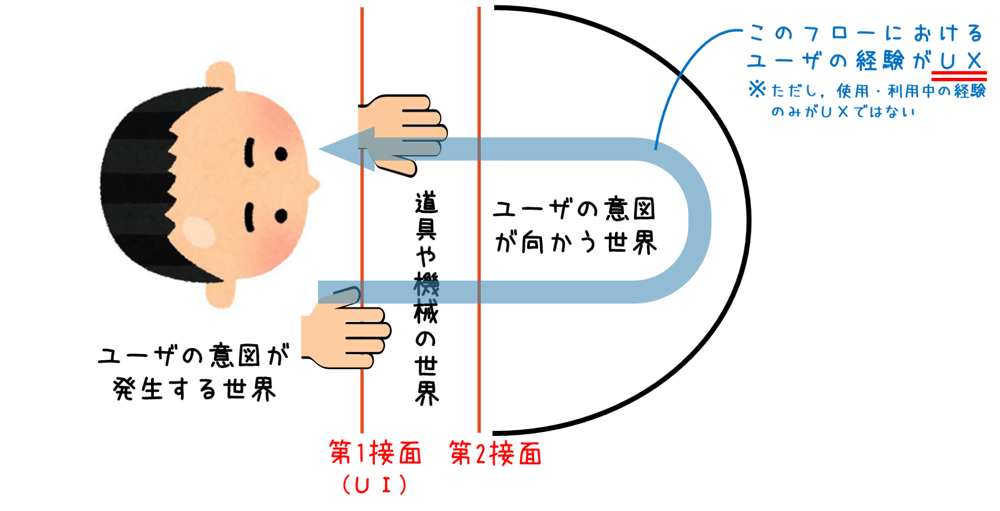

# 研究室の紹介
# 研究室で取り組んでいること
こちらの研究室ではUXのためのデザインを提案し，そのプロトタイプをオープンフィールドで試し，要求仕様を明らかにします． また，オープンフィールドで試す方法そのものも研究しています．
# UI/UXとは？
最近，ものづくりの世界でUI/UXという言葉をよく目にするようになりました． UIやUXとは何なのでしょうか？そして，UXのためのデザインとは何を意味するのでしょうか？ 困ったことにこれらの用語は業界や会社，デザイナーによって定義や解釈が若干異なったりします． そのため，余計な議論を避けたいために「広義の～」とか「狭義の～」という言葉を付けて説明する方もいます．
本研究室では，UI（User Interface）は接面であるという定義を支持します． ここでの接面の例を下の図1に示します． ユーザは何かしらの意図により，道具や機械を用いてその先の世界にアクセスしたり操作しようとします． そのユーザの意図が発生する世界と道具や機械とが接する面が第1接面であり，UIとされています （GoodUIやBadUIという言葉はこの第1接面のデザインの良し悪しを語っていると考えることができます）． また，ユーザの意図が向かった先の世界と道具や機械が接する面は第2接面と呼ばれています． ちなみに，ユーザの身体が道具や機械の世界に入り込むケースもあります． そのため本研究室では図1にて片方の手を第2接面に近いところに描いています．
図1の青色の矢印は，ユーザの意図が道具や機械を動かし，意図の向かう先の世界にたどり着き，その結果をユーザが得るまでの流れを示しています（もちろん，ユーザの意図が向かう世界から矢印が発生することもあります）．この 一連の流れによってユーザにもたらされる経験がUX（User Experience）です． ただし，使用・利用中の経験のみがUXとはなりえません．
なぜなら，ユーザにもたらされる経験を考えるときにはユーザにこれまで蓄積された経験を抜きに語ることができないからです． 図２のようにUXを期間で分類するとわかりやすいかもしれません．
道具や機械を用いるときをイメージしてください．私達は道具や機械を用いようとするとき，用いているとき，用いたあとに振り返るときのそれぞれのシーンにおいて，これまで得てきた経験が影響を及ぼしているはずですよね．この「これまで得てきた経験」は累積的UXと呼ばれており，同一の道具や機械だけでなく，似たようなUIの使用・利用経験が含まれます．
なお当研究室では，UXは類似製品を用いていたり見知ったりしたときから，記憶の底を探っても想起されなくなるまで存在するとしています，例えば，とある地方の路面電車に乗車した修学旅行生を思い浮かべてみてください．修学旅行後，30年間思い出すこともなくなっていたとしても，ある日ひょんなことで修学旅行時の路面電車の乗り心地を思い出した場合，その人のUXは30年前から断続的ですが続いていると考えています．
少し極端な話に聞こえるかもしれません．しかし，何らかのタイミングで大昔の体験を想起することは，「ユーザが意図した世界」にアクセスした結果が「ユーザの意図が発生した世界」にもたらされていなければ起こり得ないことであり，図１でいう青い矢印の一部と言えるからです．
（このような論説を掲げるのは当研究室が思い出の想起を支援する「思い出工学」にも取り組んでいるためです．詳しい話はまた改めて…）
# UXのためのデザインとは？
UXのためのデザインとは，ユーザに■■■な経験をしてほしいと願い，UIを含むシステムの全般をデザインするものです． しかし，ユーザによって使用・利用頻度は異なるでしょうし，使用・利用後の想起の頻度も異なります． 「そのようなものをどうデザインすればよいのか？」「果てしない作業になるのでは？」と思えますよね． そのため，UXの（一部分だけど）重要なシナリオを見つけ出し，デザインしていくことが求められます．
シナリオとはユーザがシステムと"ある時点"で関わった場面の構成です． ユーザは何らかのモノやシステムに関わるとき，心理的領域からUIを通して物理的領域にアクセスし，そのフィードバックをもらっています．UXにおけるシナリオは，対象となるモノやシステムを初めて見知ったときから，使い始めたとき，使い慣れたとき，使わなくなったとき，使わなくなって数十年後に突然「使っていたこと」を思い出したときまであり，それぞれの時点でのシナリオが存在します．これらのシナリオは，それぞれの時点で独立して考えることが可能です．
本研究室ではある時点でのシナリオにおける問題（要請）を発見し，その問題を打開する新たな新たなUXシナリオを考え，そのUXシナリオを実現するシステムをデザインし，評価します．
また，ユーザの有する経験をもとにシステムのUXとしてどのような要求仕様が考えられるのかを明らかにします．
# 対象にしたいシナリオ
"UXのためのデザイン"のターゲットとなるシナリオには，「いつ」×「何を」×「どのように」使用・利用するのかという組み合わせがあり，無数に存在します．本研究室では私たちの身近な問題シナリオにフォーカスを当てたいと考えています．例えば「地図アプリを用いた観光が楽しめない」「ナビがわからない」「家庭内での会話が盛り上がらない」「小さい頃に連れて行ってもらった施設の名前や位置がわからない」「楽器を習得できない」「ダンスの踊り始めるタイミングがつかめない」といった問題シナリオは，多くの人たちにイメージしてもらえる悩みであり，共感を得られやすいです．そのため専門領域を飛び越えて多くの人たちと気軽にディスカッションできます．ぶっちゃけ，北村はこのディスカッションが好きでたまらないので研究室で取り組むシナリオに身近な問題を対象にするよう推奨しております．
# 研究の流れ
当研究室では研究の進め方にシナリオベースドデザインの考えを取り入れています． シナリオベーストデザインとは，ロッソンとキャロルという方々がソフトウェア開発に関して提案したもので， インタフェース領域で何か新しいシステムを創造する際の合理的な手法の一つです．
図3は，本研究室での研究手順を示すものです． まず，私たちの身近な問題，例えば「観光を楽しめない」「カーナビの案内がわかりにくい」「防災意識が低い」などといったシナリオを発見し，それを打開するUXシナリオを描きます． そのうえで描いたUXシナリオを実現するシステムをデザインします．その後，デザインしたシステムを作り上げていくための評価，すなわち形成的評価から要求仕様をあぶり出し，得られた知見を総括する流れとなっています．

# オープンフィールドで試す『青空UX』
本研究室では形成的評価手法そのものも研究の対象にしています． どの研究分野でも言えることですが，システムの検証には定量的・定性的それぞれからの多角的な評価を必要とします． 特にUI/UXの分野ではユーザという“人”が評価対象となるために特定の評価手法のみに頼り，本来みるべきところを見落とすようなことがあってはなりません． なぜなら，重要な箇所が見落とされた評価によって世に出たシステムが人に危害を加えてしまうことはできる限り避けるべきだからです． そのため，私たちはUXのためのデザインに取り組む研究室として，評価手法の永続的な開発を使命の一つに掲げています． 特に注力しているのは，実験室のような統制環境下ではなくオープンフィールドでの実験における新たな評価手法の開発です．
｢青空UX｣という言葉について，初めて目にしたという方は多いでしょう． 2021年2月の時点ではどの検索エンジンを用いても”青空UX”はヒットしませんでした． それもそのはず． ｢青空UX｣はこの研究室を2021年2月に立ち上げた北村による造語だからです．
"青空"はオープンフィールドを指し，"青空UX"はオープンフィールドでの評価や評価方法の開発を目指す領域を示す言葉にふさわしいと考えています． また，本研究室は疑問に感じたことについて「まずはちょっと試してみようや」を合言葉にする集団を目指しており， "青空"という言葉は常識という屋根を突き抜けて新たな知見を得る気概を示すのにしっくりくると考えています． そのため，研究室名を青空UX研究室（AozoraUxLab.）と称し，マークにも青空を示すデザインを採用しています．
# 本研究室に興味を持ってくださった方々へ
本研究室の活動に興味・関心を持っていただけた方は気軽にご連絡をくださると幸いです． できるだけ多くの方々と共に面白いことができたらと考えております． 香川大学の学生さんはもちろんのこと，他大学の学生さんや企業の方々，在野の市民研究者の皆さんからの問い合わせもお待ちしております．
どうぞよろしくお願いします．
# 参考文献
- 佐伯胖（1988）"機械と人間の情報処理 - 認知工学序説" in 竹内啓編（1988）「意味と情報」, 東京大学出版会
- 海保博之・原酬鬼子・黒須正明（1991）認知的インターフェイス. コンピュータとの知的つきあい方, 新曜社
- 黒須正明 (2020) UX原論 ユーザビリティからUXへ, 近代科学社
- UX白書サマリー資料20111015, https://www.slideshare.net/hcdvalue/ux20111015 (opens new window)（2021-05-02参照）
- Rosson M.B. and Carroll, J.M (2002a) Usability Engineering: Scenario-Based Development of Human Computer Interaction, Morgan Kaufmann
- Rosson M.B. and Carroll, J.M (2002b) "Scenario-Based Design" in Jacko, J. and Sears, A. (eds.) The Human-Computer Interaction Handbook: Fundamentals, Evolving Technologies and Emerging Applications, pp. 1032–1050